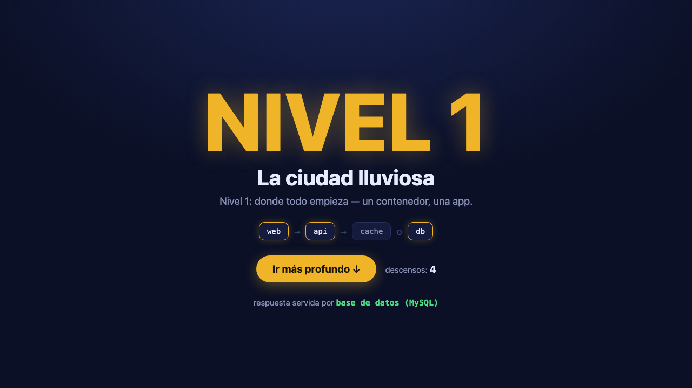

En Inception (2010), el equipo de Cobb entra en un sueño…
y dentro de ese sueño, en otro, y en otro. Cada nivel es más profundo,
más poderoso… y más peligroso.
Hoy hacemos lo mismo con las apps:
cada nivel de sueño = una capa más de arquitectura.
Y sí: hay un Limbo. Ya llegamos.
NIVEL 1 Ciudad lluviosa lo que ya sabéis de Docker
NIVEL 2 El hotel microservicios + Compose
NIVEL 3 Fortaleza nevada crecer: salud, escalado
LIMBO Demasiado profundo los que se pierden
PRÁCTICA Vuestro descenso 20' manos al teclado
NIVEL 1
DESCENDEMOS AL PRIMER SUEÑO
La ciudad lluviosa
Donde empezó todo: un contenedor, una app. Lo que visteis en la charla anterior.
NIVEL 1
Lo que ya sabéis: empaquetar una app
📦
Imagen
La receta congelada: tu app + sus dependencias. Inmutable, versionada, compartible.
🚂
Contenedor
Una imagen en ejecución. Aislada, ligera, desechable: muere y renace igual.
📜
Dockerfile
Las instrucciones para construir la imagen, capa a capa.
Un contenedor = un proceso empaquetado.
Tu máquina no se contamina de dependencias.
La de tu compañero tampoco: «en mi máquina funciona» se acabó.
NIVEL 1
…hasta que tu app crece
Una app de verdad no es un proceso: es web + API + base de datos + caché. A mano:
$ docker network create red
$ docker run -d --name db --network red -e MYSQL_PASSWORD=*** -v datos:/var/lib/mysql mysql:8.4
$ docker run -d --name cache --network red redis:7
$ docker run -d --name api --network red -e DB_HOST=db -e REDIS_HOST=cache mi-api
$ docker run -d --name web --network red -p 8080:80 mi-web
# …y al día siguiente: IPs cambiadas, orden de arranque, variables a medias…
🧠 memorizar flags de memoria
🔢 IPs y orden a mano
🔁 nada reproduce esto en tu portátil
NIVEL 2
UN SUEÑO MÁS ABAJO
El hotel: microservicios
La app se rompe en piezas pequeñas e independientes… y necesitan orquestarse.
NIVEL 2
Monolito vs microservicios
Monolito
🏪 LA APLICACIÓN
interfaz web
lógica de negocio
acceso a datos
↕
base de datos
Un solo bloque que lo hace todo. Simple — hasta que duele.
Microservicios
webnginx→apiFastAPI→cacheRedis
↘dbMySQL↙
Piezas pequeñas, desplegables por separado, que se hablan por la red.
NIVEL 2
Qué ganas
🎚️
Escalar solo lo que sufre
¿La API va saturada? Más réplicas de la API. El resto, quieto.
🚀
Desplegar por partes
Cambia la API sin tocar la web. Sin «redeploy total» a las 2 AM.
👥
Equipos autónomos
Cada equipo posee sus piezas: sus ritmos, sus despliegues.
🧩
Mezclar tecnologías
Python para la API, Redis para caché, MySQL para datos: cada pieza, su herramienta.
…y fallos más acotados: se cae la caché, la app sigue (degradada, pero viva).
NIVEL 2
Qué pagas (la factura siempre llega)
📡
Red y latencia
Llamada de función: nanosegundos. Llamada por red: milisegundos. Y se pierde.
⚙️
Más piezas vivas
4 servicios = 4 cosas que arrancar, vigilar, actualizar y romper.
🧨
Fallos parciales
¿La caché no responde? La app entera debe saber qué hacer sin ella.
🔍
Verlo todo es más difícil
Un fallo repartido entre 4 contenedores y 3 equipos = detective work.
La consistencia también se paga: datos repartidos = sincronizar es TU problema.
NIVEL 2
¿Cuándo bajar a este nivel?
Sí, cuando…
El dominio es grande y se parte en trozos naturales
Partes del sistema necesitan escalar distinto
Equipos múltiples que se pisan en un mismo repo
Requisitos distintos por pieza (tiempo real vs batch)
Todavía no, si…
El producto acaba de nacer y aún no sabes qué tiene
El equipo es pequeño (¡como el vuestro en los proyectos!)
«Porque lo llevan las empresas grandes» — no es un requisito
Regla de oro: empieza con un monolito bien modularizado; sepáralo cuando duela.
NIVEL 2
La herramienta del nivel 2: Docker Compose
Un archivo describe toda la app. Un comando la levanta entera.
$ docker compose up -d
Red privada + DNS interno + orden de
arranque + volúmenes + variables: todo, declarado. Nada de flags de memoria.
Compáralo con la transparencia de los 5 docker run…
NIVEL 2
La app de hoy: «niveles de sueño»
webnginx :8080→apiFastAPI→cacheRedis
→↘dbMySQL + volumen
Cada clic en «Ir más profundo ↓» baja de nivel
(1→2→3→Limbo→1…). La página dice quién respondió: ¿la caché o la base de datos?
4 microservicios reales, ~25 líneas de YAML, en el repo.

NIVEL 3
MÁS PROFUNDO AÚN
La fortaleza nevada: crecer
Salud, escalado, entornos… lo que cambia cuando esto deja de ser un ejercicio.
NIVEL 3
Qué cambia al crecer
🫀
Healthchecks
Cada servicio declara cómo comprobar que está vivo. Compose espera a eso antes de arrancar a los siguientes.
📈
Escalado
--scale api=3: réplicas de un servicio sin tocar los demás.
🎭
Dev vs prod
overrides y profiles: un YAML base + extras por entorno.
🧭
¿Y más profundo?
Cuando Compose se queda corto: orquestadores — Swarm, Kubernetes… otro día.
Todo esto ya está sembrado en el compose.yml del repo: healthchecks incluidos.
LIMBO
Demasiado profundo
«Microservicios» para una web con tres páginas
Kubernetes en el CV antes que docker compose up en los dedos
12 servicios para 2 desarrolladores
Una cola de mensajes… para un formulario de contacto
En el Limbo de la película se pierde uno creyendo que el sueño es real.
En el nuestro: complejidad por moda, arquitectura que impresiona y no deja dormir.
El nivel correcto es el más somero que resuelve tu problema.
PRÁCTICA
⏱ 2'
El descenso es vuestro: preparados
En parejas si alguien sin Docker: uno conduce, otro navega.
$ docker --version # ¿funciona? icono 🐳 de Docker Desktop activo$ git clone https://github.com/jcxk/pildora_dd_microsrv.git
$ cd pildora_dd_microsrv/demo
P0 preparar
P1 levantar
P2 capó
P3 añadir
P4 bonus
¿Sin Docker o sin git? Descarga ZIP del repo — vale igual. Levanta la mano si algo falla 🙋
PRÁCTICA · PASO 1
⏱ 5'
Levantad la app
Un archivo, un comando. Todo el nivel 2, de golpe.
$ docker compose up -d --build
$ docker compose ps
Abrid http://localhost:8080 y pulsad «Ir más profundo ↓» varias veces.
Mirad abajo en la página: ¿quién responde, la caché o la base de datos? Refrescad dos veces seguidas.
P0 preparar
P1 levantar
P2 capó
P3 añadir
P4 bonus
PRÁCTICA · PASO 2
⏱ 4'
Debajo del capó: la red y el DNS
Comprobar que los contenedores se encuentran por nombre.
$ docker compose logs -f # lo que dice cada uno (Ctrl+C para salir)$ docker compose exec api bash # entra DENTRO del contenedor de la api$ python -c "import socket; print(socket.gethostbyname('db'))" # ¡una IP!$ exit
$ docker network ls | grep sueno # la red privada del proyecto
P0 preparar
P1 levantar
P2 capó
P3 añadir
P4 bonus
PRÁCTICA · PASO 3
⏱ 5'
Añadid vuestro propio servicio
Adminer: web para administrar MySQL. 7 líneas de YAML en demo/compose.yml:
Sistema: MySQL · Servidor: db Usuario: sueno · Contraseña: sueno_pass Base de datos: sueno
P0 preparar
P1 levantar
P2 capó
P3 añadir
P4 bonus
El mapa del sueño
NIVEL 1 contenedor: un proceso empaquetado
NIVEL 2 piezas que se hablan por red + Compose ◀ estáis aquí
NIVEL 3 salud, escalado, entornos, orquestación
LIMBO complejidad por moda
Vivid en el nivel 2.
Dominad up · down · logs · exec · ps y el YAML de un servicio: con eso construís cualquier proyecto de F5 y la mitad de los reales.
Deberes: Paso 4 del repo — persistencia y --scale api=3.
¿Preguntas? Podemos ir más profundo.
📦 El repo: github.com/jcxk/pildora_dd_microsrv
📖 Docs de Compose: docs.docker.com/compose
🧪 Práctica (P0–P4): practica/ en el repo
🌀 El meme: knowyourmeme.com/memes/we-need-to-go-deeper